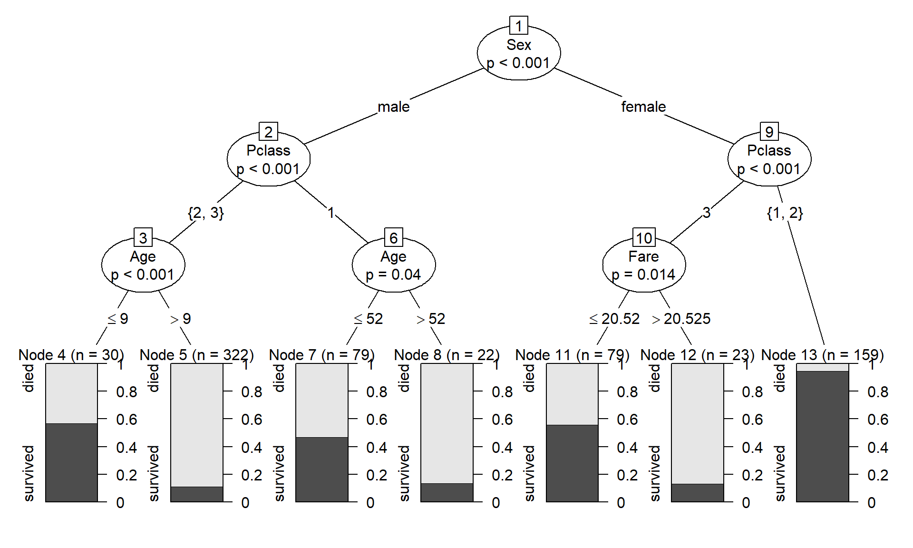
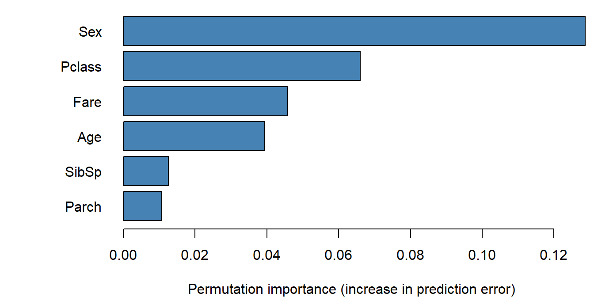
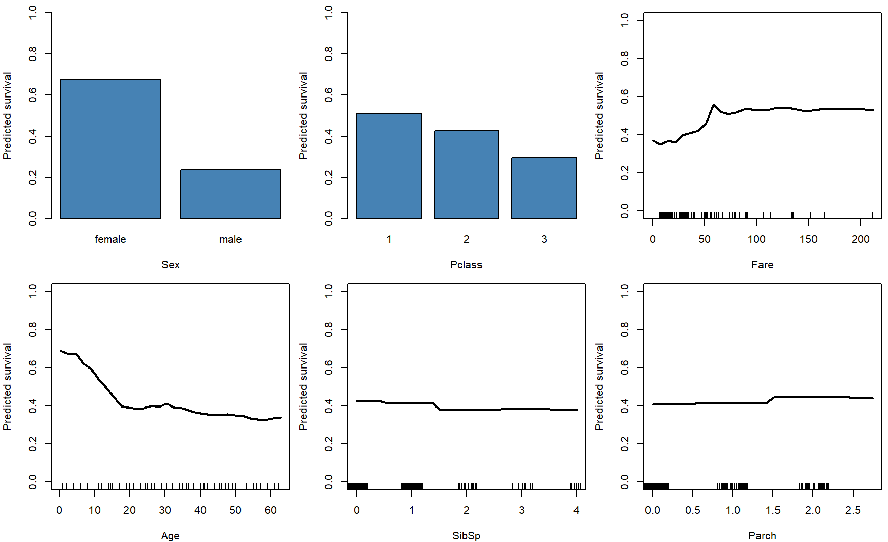
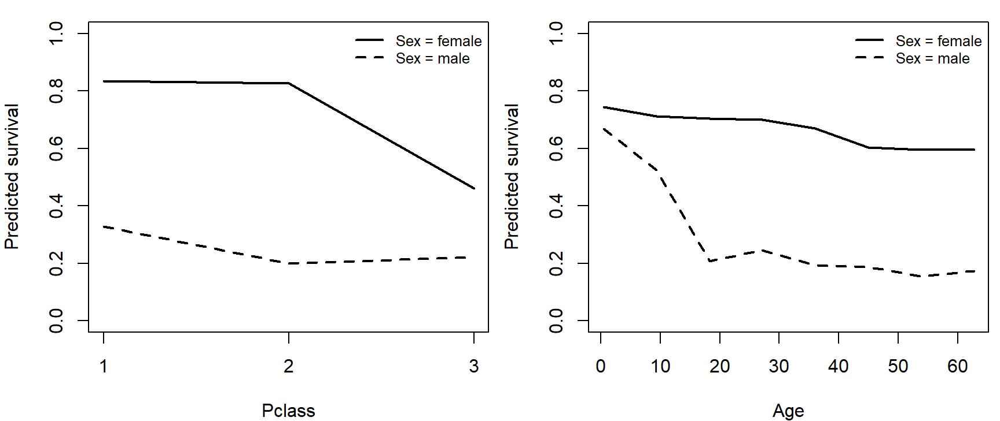

This is a supplemental page, kept for students from earlier years of the course; random forests aren't part of the current course. R code from this page is also in the companion script. Packages: ranger, party. Bolker doesn't cover machine learning; the original source is Breiman (2001, Machine Learning 45: 5-32).
Statistical models describe how the data arose and estimate the parameters of that process, with their uncertainty. Machine learning algorithms look for patterns that predict well, with fewer assumptions and less interest in parameters. This part explains decision trees and how a random forest combines many of them.
In statistics we learn about a population from a sample. We write down a data-generating model (a likelihood), fit it, check it, and report parameter estimates with confidence or credible intervals. Prediction often comes second.
In machine learning the goal is usually prediction: find patterns in the available data that generalize to new cases. The analyst specifies less, and the algorithm does more of the work. There are no distributional assumptions about residuals, and relationships needn't be linear or specified in advance. The price is that there are no parameters with intervals or p-values to interpret. Machine-learning predictions can be more accurate than a statistical model's, and the patterns they find can suggest hypotheses to test with a statistical model later.
A decision tree is a set of branching rules that predicts a response from a set of predictors (in machine learning, features):
Each split point is a node. A single tree is easy to read, but it is unstable: a slightly different sample can produce a very different tree, and a deep tree fits the noise.
A random forest grows many trees (500 is a common default), each on a perturbed version of the data, and averages their predictions:
ranger, the square root of the number of features by default) when choosing the split.Each tree on its own is a noisy, overfit predictor. Because the trees see different data and different features, their errors are only partly correlated, so averaging cancels much of the noise. This is the same reason a mean of many measurements is more precise than one measurement.
The observations a tree didn't see (about 37%, its out-of-bag observations) give a built-in test set. Predicting each observation from only the trees that didn't use it gives an out-of-bag error, an estimate of performance on new data that works like cross-validation without any refitting.
In the widget, 60 points come from a smooth curve plus noise, with one predictor. Each tree is grown on a bootstrap sample. (With one predictor there is no feature subsampling, so this shows the bagging part of the algorithm.)
Question: With one tree, how does the step function compare with the true curve? Add trees: what happens to the error on new data, and why does it level off instead of reaching 0? Then set the depth to 1 (each tree has a single split). Does averaging still help as much?
Passenger records from the Titanic give survival (0 or 1), sex, age, ticket class, fare, and the numbers of siblings or spouses and of parents or children aboard. Which features predict survival, and how?
The data are at https://kevintshoemaker.github.io/NRES-746/data/titanic.csv. Categorical variables must be factors, not numbers or text, for both packages used here:
titanic <- read.csv(
"https://kevintshoemaker.github.io/NRES-746/data/titanic.csv"
)
features <- c("Pclass", "Sex", "Age", "SibSp", "Parch", "Fare")
titanic <- na.omit(titanic[, c("Survived", features)]) # 714 passengers with known age
titanic$Survived <- factor(titanic$Survived, levels = 0:1, labels = c("died", "survived"))
titanic$Sex <- factor(titanic$Sex)
titanic$Pclass <- factor(titanic$Pclass) # ticket class 1, 2, 3
str(titanic)## 'data.frame': 714 obs. of 7 variables:
## $ Survived: Factor w/ 2 levels "died","survived": 1 2 2 2 1 1 1 2 2 2 ...
## $ Pclass : Factor w/ 3 levels "1","2","3": 3 1 3 1 3 1 3 3 2 3 ...
## $ Sex : Factor w/ 2 levels "female","male": 2 1 1 1 2 2 2 1 1 1 ...
## $ Age : num 22 38 26 35 35 54 2 27 14 4 ...
## $ SibSp : int 1 1 0 1 0 0 3 0 1 1 ...
## $ Parch : int 0 0 0 0 0 0 1 2 0 1 ...
## $ Fare : num 7.25 71.28 7.92 53.1 8.05 ...
## - attr(*, "na.action")= 'omit' Named int [1:177] 6 18 20 27 29 30 32 33 37 43 ...
## ..- attr(*, "names")= chr [1:177] "6" "18" "20" "27" ...A single tree (a classification tree; with a numeric response it would be a regression tree), limited to three levels so it can be read:
library(party)
tree <- ctree(Survived ~ ., data = titanic,
controls = ctree_control(mincriterion = 0.85, maxdepth = 3))
plot(tree)
Each bar at the bottom shows the share of passengers in that leaf who survived (dark) and died (light). Sex makes the first split; then class, and within those groups age or fare. Boys 9 and under in second or third class survived far more often than older males in those classes, and nearly all women in first or second class survived. (ctree() grows a conditional inference tree, which chooses each split with a significance test; hence the p-values at the nodes.)
ranger is a fast implementation of random forests. With probability = TRUE it predicts the probability of each class instead of a single class; importance = "permutation" records the variable importance described in the next section.
library(ranger)
rf <- ranger(Survived ~ ., data = titanic, num.trees = 500, probability = TRUE,
importance = "permutation", seed = 746)
rf## Ranger result
##
## Call:
## ranger(Survived ~ ., data = titanic, num.trees = 500, probability = TRUE, importance = "permutation", seed = 746)
##
## Type: Probability estimation
## Number of trees: 500
## Sample size: 714
## Number of independent variables: 6
## Mtry: 2
## Target node size: 10
## Variable importance mode: permutation
## Splitrule: gini
## OOB prediction error (Brier s.): 0.1290375Like most machine-learning algorithms, a forest has tuning settings: the number of features tried at each split (mtry), the minimum leaf size, and the number of trees. The defaults usually work well. In a real analysis, try a few settings and compare their out-of-bag error.
Permutation importance: for each tree, shuffle one feature's values among the out-of-bag observations, which breaks its link to the response, and measure how much the predictions get worse. A feature the forest relies on loses a lot of accuracy when shuffled.
imp <- sort(importance(rf))
par(mar = c(4, 7, 0.5, 0.5))
barplot(imp, horiz = TRUE, las = 1, col = "steelblue",
xlab = "Permutation importance (increase in prediction error)")
Sex matters most, then ticket class, fare, and age. Importance says how much the predictions depend on a feature, not the direction or shape of its effect, and correlated features (class and fare here) share credit in ways that are hard to untangle.
A partial dependence plot shows a feature's effect on the predictions: set the feature to one value for every passenger, predict, average, and repeat across a range of values. The other features keep their observed values, so the curve averages over the real mix of passengers.
# mean predicted survival when 'feature' is set to each value in 'values'
partial_dependence <- function(feature, values) {
sapply(seq_along(values), function(i) {
nd <- titanic
nd[[feature]] <- values[i]
mean(predict(rf, nd)$predictions[, "survived"])
})
}par(mfrow = c(2, 3), mar = c(4, 4, 1, 0.5))
for (f in names(sort(importance(rf), decreasing = TRUE))) {
x <- titanic[[f]]
values <- if (is.factor(x)) factor(levels(x), levels = levels(x)) else
seq(min(x), quantile(x, 0.98), length.out = 30) # skip the extreme fares
pd <- partial_dependence(f, values)
if (is.factor(x)) {
barplot(pd, names.arg = levels(x), ylim = c(0, 1), col = "steelblue",
xlab = f, ylab = "Predicted survival")
} else {
plot(values, pd, type = "l", lwd = 2, ylim = c(0, 1), xlab = f,
ylab = "Predicted survival")
rug(jitter(x[x <= max(values)]))
}
}
par(mfrow = c(1, 1))Averaged over the other features, predicted survival is 0.68 for women and 0.24 for men. Young children did better than adults (0.66 at age 2, 0.40 at 30), a nonlinear pattern a logistic regression with a straight-line age term would miss.
If two features don't interact, their two-way partial dependence is the sum of two separate effects. A simple measure of interaction strength is how far the two-way partial dependence departs from the best additive fit:
# two-way partial dependence on a grid, and its departure from an additive fit
grid_values <- function(x) {
if (is.factor(x)) factor(levels(x), levels = levels(x)) else
seq(min(x), quantile(x, 0.98), length.out = 8)
}
pd_2way <- function(f1, f2) {
grid <- expand.grid(v1 = grid_values(titanic[[f1]]), v2 = grid_values(titanic[[f2]]))
nd <- titanic[rep(seq_len(nrow(titanic)), times = nrow(grid)), ] # every passenger at every grid point
nd[[f1]] <- rep(grid$v1, each = nrow(titanic))
nd[[f2]] <- rep(grid$v2, each = nrow(titanic))
grid$pd <- tapply(predict(rf, nd)$predictions[, "survived"],
rep(seq_len(nrow(grid)), each = nrow(titanic)), mean)
grid
}
pairs <- as.data.frame(t(combn(features, 2)))
names(pairs) <- c("f1", "f2")
pairs$strength <- sapply(seq_len(nrow(pairs)), function(i) {
g <- pd_2way(pairs$f1[i], pairs$f2[i])
sqrt(mean(resid(lm(pd ~ factor(v1) + factor(v2), data = g))^2)) # RMS departure from additive
})
pairs <- pairs[order(pairs$strength, decreasing = TRUE), ]
head(pairs, 5)## f1 f2 strength
## 1 Pclass Sex 0.08067509
## 6 Sex Age 0.07161184
## 10 Age SibSp 0.03201296
## 5 Pclass Fare 0.03087172
## 12 Age Fare 0.02935121The two strongest interactions both involve sex: sex with class, and sex with age. Plot them:
# two-way partial dependence: x axis = the feature with more grid values, one line per value of the other
plot_2way <- function(f1, f2) {
g <- pd_2way(f1, f2)
if (nlevels(factor(g$v1)) < nlevels(factor(g$v2))) {
g <- g[, c("v2", "v1", "pd")]
names(g) <- c("v1", "v2", "pd")
tmp <- f1; f1 <- f2; f2 <- tmp
}
x <- as.numeric(g$v1)
groups <- split(seq_len(nrow(g)), factor(g$v2))
plot(NA, xlim = range(x), ylim = c(0, 1), xlab = f1, ylab = "Predicted survival",
xaxt = if (is.factor(g$v1)) "n" else "s")
if (is.factor(g$v1)) axis(1, at = seq_along(levels(g$v1)), labels = levels(g$v1))
for (k in seq_along(groups)) lines(x[groups[[k]]], g$pd[groups[[k]]], lwd = 2, lty = k)
legend("topright", paste(f2, "=", names(groups)), lwd = 2, lty = seq_along(groups),
bty = "n", cex = 0.8)
}
par(mfrow = c(1, 2), mar = c(4, 4, 1, 0.5))
plot_2way(pairs$f1[1], pairs$f2[1])
plot_2way(pairs$f1[2], pairs$f2[2])
par(mfrow = c(1, 1))Class mattered mainly for women: predicted survival drops sharply for women in third class but changes little across classes for men. Age mattered mainly for males: boys survived far more often than men, while survival declines only gently with age for women. A logistic regression would need these interactions written in explicitly; the forest found them on its own.
How well does the forest predict survival? Compare its predictions for the passengers it was trained on, its out-of-bag predictions, and 10-fold cross-validation, along with a logistic regression using the same features. Both models are scored by AUC and McFadden's pseudo-\(R^2\) (both explained on the model performance page).
y <- as.numeric(titanic$Survived == "survived")
auc <- function(p, y) {
r <- rank(p)
n1 <- sum(y)
n0 <- sum(1 - y)
(sum(r[y == 1]) - n1 * (n1 + 1) / 2) / (n1 * n0)
}
dev <- function(p) {
p <- pmin(pmax(p, 1e-4), 1 - 1e-4) # avoid log(0) for predictions of exactly 0 or 1
-2 * sum(dbinom(y, 1, p, log = TRUE))
}
mcfadden <- function(p) 1 - dev(p) / dev(rep(mean(y), length(y)))
set.seed(746)
folds <- sample(rep(1:10, length.out = nrow(titanic)))
p_cv_rf <- p_cv_glm <- numeric(nrow(titanic))
for (k in 1:10) {
train <- titanic[folds != k, ]
test <- titanic[folds == k, ]
m_rf <- ranger(Survived ~ ., data = train, num.trees = 500, probability = TRUE, seed = k)
p_cv_rf[folds == k] <- predict(m_rf, test)$predictions[, "survived"]
m_glm <- glm(Survived ~ ., data = train, family = binomial)
p_cv_glm[folds == k] <- predict(m_glm, test, type = "response")
}
m_glm <- glm(Survived ~ ., data = titanic, family = binomial)
preds <- list(forest_training_data = predict(rf, titanic)$predictions[, "survived"],
forest_out_of_bag = rf$predictions[, "survived"],
forest_10fold_cv = p_cv_rf,
logistic_training_data = fitted(m_glm),
logistic_10fold_cv = p_cv_glm)
perf <- t(sapply(preds, function(p) c(AUC = auc(p, y), McFadden = mcfadden(p))))
round(perf, 3)## AUC McFadden
## forest_training_data 0.961 0.578
## forest_out_of_bag 0.867 0.377
## forest_10fold_cv 0.867 0.379
## logistic_training_data 0.859 0.341
## logistic_10fold_cv 0.852 0.324On the passengers it was trained on, the forest looks nearly perfect (AUC 0.96, pseudo-\(R^2\) 0.58), because its deep trees memorize much of the training data. Out-of-bag (0.87) and cross-validated (0.87) AUCs agree, and both are far lower: never judge a forest by its fit to the training data. Under cross-validation the forest still beats the logistic regression a little (0.85), in part because it picks up the age and class patterns the straight-line logistic model misses.